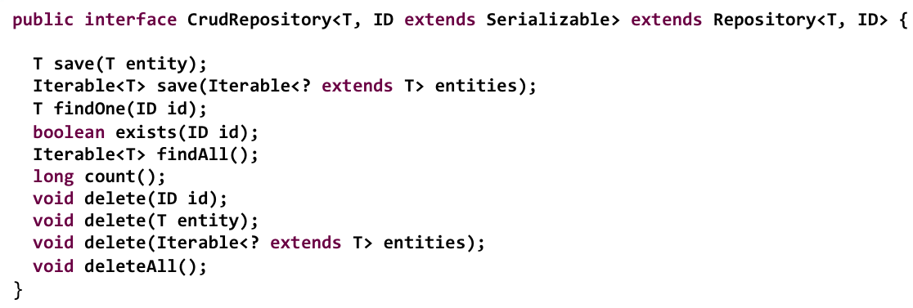
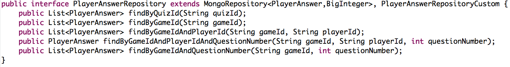

Spring Data
An Overview
David Turanski, Sr Software Engineer VMWare/SpringSource / @dturanski
 JPA
Query DSL
JDBC
JPA
Query DSL
JDBC


 GemFire
GemFire

… provide a familiar and consistent Spring based programming model while retaining store-specific features and capabilities
Repositories
Repository
Mediates between the domain and data mapping layers using a collection-like interface for accessing domain objects.Martin Fowler

Spring Data CRUD Repository - You get this out of the box.
Query Methods

Also: StartsWith, EndsWith, Contains, After, Before
PlayerAnswerRepository
Mapping
Spring Data provids store-specific annotations for domain classes
Questions?

More Information
| Spring Data Project Page | http://www.springsource.org/spring-data |

|
http://shop.oreilly.com/product/0636920024767.do |
| Source Code | http://github.com/SpringSource |